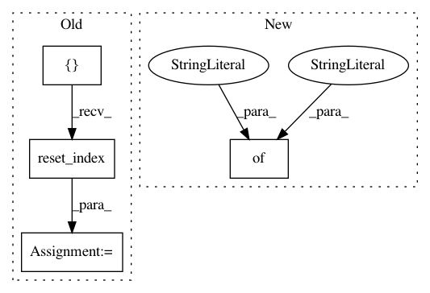

fbd16b4f301f09b8868b60a4762700f3251e2cdc,src/pudl/transform/ferc1.py,,plant_in_service,#Any#Any#,977
Before Change
for category in pis_df.columns.levels[0]:
tmp_df = pis_df.loc[:, category].copy()
tmp_df["amount_type"] = category
categorized_pis = pd.concat([categorized_pis, tmp_df])
categorized_pis.columns.name = None
pis_df = (
categorized_pis.reset_index()
.assign(
amount_type=lambda x: x["amount_type"]
.replace(
to_replace={
"begin_yr_bal": "starting_balance",
"addition": "additions",
"yr_end_bal": "ending_balance",
}
)
)
.pipe(_clean_cols, "f1_plant_in_srvce")
)
// Get rid of the columns corresponding to "header" rows in the FERC
// form, which should *never* contain data... but in about 2 dozen cases,
// they do. See this issue on Github for more information:
// https://github.com/catalyst-cooperative/pudl/issues/471
After Change
.pipe( // Convert top level of column index into a categorical column:
cols_to_cats,
cat_name="amount_type",
col_cats={
"begin_yr_bal": "starting_balance",
"addition": "additions",
"retirements": "retirements",
"adjustments": "adjustments",
"transfers": "transfers",
"yr_end_bal": "ending_balance",
})
.rename_axis(columns=None)
.pipe(_clean_cols, "f1_plant_in_srvce")
.set_index([
In pattern: SUPERPATTERN
Frequency: 3
Non-data size: 4
Instances
Project Name: catalyst-cooperative/pudl
Commit Name: fbd16b4f301f09b8868b60a4762700f3251e2cdc
Time: 2019-12-05
Author: zane.selvans@catalyst.coop
File Name: src/pudl/transform/ferc1.py
Class Name:
Method Name: plant_in_service
Project Name: J535D165/recordlinkage
Commit Name: 4a24e4e36ee175aef54b92eb03e08a2be7811a96
Time: 2018-03-10
Author: jonathandebruinhome@gmail.com
File Name: recordlinkage/datasets/febrl.py
Class Name:
Method Name: _febrl_links
Project Name: bokeh/bokeh
Commit Name: 061d916ba77932d50e41c83f476d8c0d55674856
Time: 2018-10-13
Author: xavart2011@gmail.com
File Name: examples/app/gapminder/main.py
Class Name:
Method Name: